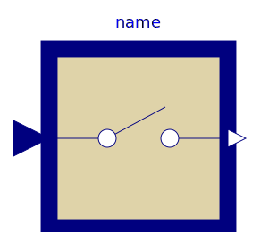
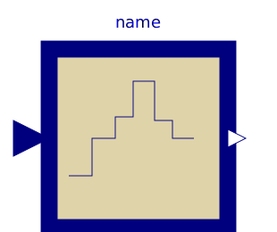
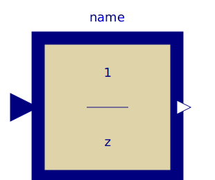
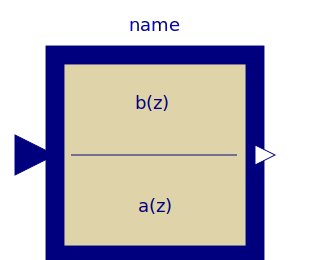
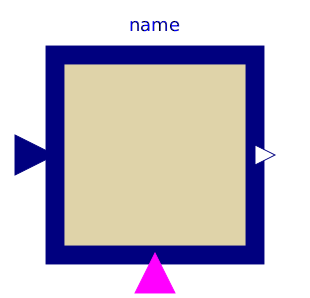

This package contains discrete control blocks with fixed sample period. Every component of this package is structured in the following way:
A sampled data system may consist of components of package Discrete and of every other purely algebraic input/output block, such as the components of packages Modelica.Blocks.Math, Modelica.Blocks.Nonlinear or Modelica.Blocks.Sources.
| Name | Description |
|---|---|
|  Sampler | Ideal sampling of continuous signals |
|  ZeroOrderHold | Zero order hold of a sampled-data system |
| First order hold of a sampled-data system | |
|  UnitDelay | Unit Delay Block |
|  TransferFunction | Discrete Transfer Function block |
| Discrete State Space block | |
| TriggeredSampler | Triggered sampling of continuous signals |
|  TriggeredMax | Compute maximum, absolute value of continuous signal at trigger instants |